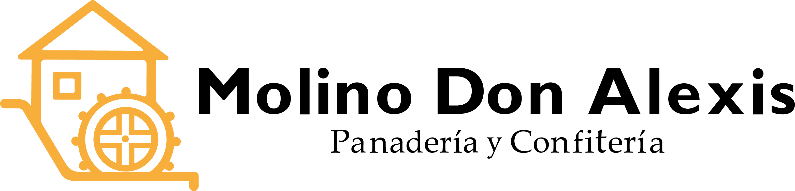

Una vista rápida de los números que más importan en junio.
Junio fue el primer mes de la cuenta y arrancó con fuerza: el contenido alcanzó a 1.784 cuentas y sumó 5.100 visualizaciones, con 136 seguidores netos nuevos. El motor del mes fueron los Reels, que concentraron el 58% de las vistas y el 86,6% de todas las interacciones. Las fechas especiales —Día del Padre y San Juan— y un sorteo de la selección impulsaron la conversación, con 290 comentarios en el mes. La audiencia es marcadamente local (Encarnación e Itapúa) y mayormente femenina de 25 a 34 años, perfil muy coherente con la confitería.
Casi 3 de cada 10 vistas vienen de gente que aún no te sigue: contenido que sale a descubrir.
La comunidad que ya te sigue es la que más interactúa: base fiel.
Qué formato vio la gente y cuánto rindió cada uno.
Los Reels son, por lejos, el formato que más se ve. Las publicaciones del feed quedan en último lugar en visualizaciones.
El enlace del perfil abre el chat de WhatsApp de la panadería y la dirección abre Google Maps. Con 363 visitas al perfil pero solo 8 clics a WhatsApp, hay margen para reforzar el llamado a la acción hacia el pedido.
Cómo respondió la gente y cómo creció la comunidad.
Los comentarios superan por mucho a los “me gusta”, impulsados por el sorteo de la selección que pedía participar comentando.
Prácticamente toda la interacción del mes ocurrió en Reels. El feed tradicional aporta muy poco.
Las altas se concentraron en los primeros días del mes y se mantuvieron de forma constante. Una retención altísima: por cada baja entraron 69 seguidores nuevos.
Quién está del otro lado de la pantalla.
El perfil es muy local: 4 de cada 5 seguidores están en Paraguay y la mayoría en Encarnación e Itapúa, justo la zona de influencia del negocio. Predomina la mujer de 25 a 34 años, decisora típica de compra en panadería y confitería. La comunicación, las promociones y los horarios deberían pensarse para ese público.
Las piezas que más se vieron en el mes.
| # | Contenido | Formato | Vistas | Alcance |
|---|---|---|---|---|
| 1 | “Feliz Día” — Día del Padre | Reel | 672 | 221 |
| 2 | Endulza tu día — meriendas | Publicación | 193 | 76 |
| 3 | Regalo para papá — torta | Publicación | 179 | 68 |
| 4 | San Juan dice que sí | Publicación | 125 | 44 |
| 5 | Historia ganadoras / canasta San Juan | Historia | 124 | — |
| 6 | Piononos | Publicación | 113 | 42 |
| 7 | Sorteo Albirroja — remera | Historia | 84 | — |
| 8 | Marmolada | Publicación | 52 | — |
Las historias muestran “vistas” en lugar de alcance. El reel del Día del Padre concentró por sí solo el 13% de todas las visualizaciones del mes.
El Reel “Feliz Día” (Día del Padre, 17 jun) hizo 672 visualizaciones, llegó a 221 cuentas y tuvo 16 me gusta, con un tiempo de visualización promedio de 13 segundos. Combinó producto + fecha emotiva + formato video: la fórmula que mejor funcionó en junio.
58% de las vistas y 86,6% de las interacciones. También son la principal puerta de entrada de gente nueva (74% de las vistas de no seguidores).
El Día del Padre y San Juan generaron el contenido más visto del mes. El calendario local es una oportunidad clara.
Los Reels traen el alcance y la interacción (87% del total), mientras que las publicaciones del feed construyen la imagen y la coherencia del perfil: lo que ve —y valora— quien entra a decidir si seguir o comprar. Se complementan.
363 visitas al perfil pero solo 8 clics al enlace de WhatsApp: hay un llamado a la acción por reforzar para convertir esas visitas en pedidos.
Potenciar los Reels —son los que traen vistas y seguidores nuevos— manteniendo a la vez un feed cuidado y armonioso, que es lo que da una buena primera impresión a quien visita el perfil. Ambos formatos cumplen su función.
Las fechas especiales rindieron muy bien en junio (San Juan, Día del Padre). Julio trae varias oportunidades para repetir la fórmula producto + fecha: las detallamos al final del reporte.
Sumar el sticker de enlace a WhatsApp en historias y un CTA claro hacia el pedido por WhatsApp en los Reels, para convertir las 363 visitas al perfil en consultas.
Los sorteos atraen seguidores rápido, pero no siempre se quedan. Acompañarlos con contenido que muestre el producto, recetas o el detrás de escena ayuda a que esa comunidad nueva se enganche y permanezca.
Período analizado: junio 2026. Datos del perfil profesional de Instagram. Algunas lecturas sobre el origen de los comentarios son interpretaciones del equipo a partir de los datos disponibles.
Ideas de contenido alineadas al calendario, para repetir la fórmula que funcionó en junio: producto + fecha.
Ideal para lucir tortas, postres y todo lo que lleva chocolate. Un flyer de producto en primer plano es la apuesta natural del mes.
Frío y chicos en casa durante varias semanas: chocolate caliente, churros, facturas y meriendas. Contenido cálido y de temporada.
Se celebra en honor a Santa Ana y San Joaquín —los padres de la Virgen María y abuelos de Jesús—, reconocidos como patronos de los abuelos. Ángulo emotivo: una merienda o un dulce para compartir con ellos.
La fecha más fuerte del mes en Paraguay. Juntadas y meriendas entre amigos: combos y cajas para compartir, ideales para una promo.
Sugerencias de Fil-Grama según el calendario; combinables con los productos de temporada de Molino Don Alexis.